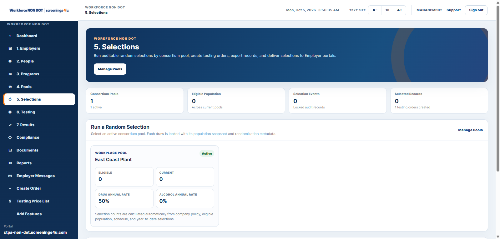

Employee Management
Keep active, terminated and historical employee records connected.
Workforce brings employees, programs, random testing, testing orders, results, compliance, documents and reporting into one SaaS workspace.

Build the program around employees and employers rather than around disconnected tools.
Keep active, terminated and historical employee records connected.
Create company-specific non-DOT programs and participation rules.
Manage random eligibility, selections and resulting testing activity.
Create and track tests tied to people and programs.
Track policy acknowledgments, deadlines and open program work.
Centralize workforce and program documents.
Use connected data for standard and advanced reports.
Keep users informed about testing and compliance activity.

Keep identity, employment status, program participation, testing, documents and history attached to the same person.
Programs sit on top of the same employer and employee data, so administration stays connected.


When a non-DOT program uses random testing, selections and resulting orders stay linked to the workforce record.
Keep tasks, policies, documents and operational exceptions visible in one place.

Start with the Employer or C/TPA plan that fits your operating model.